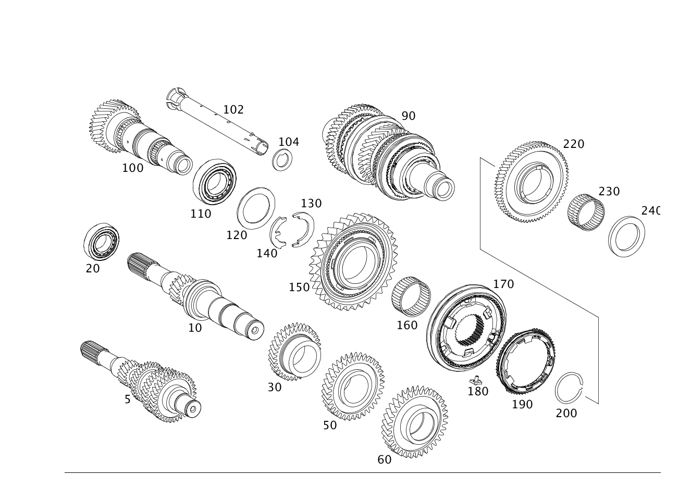

| № | Артикул | Название | Кол. | Примечание |
|---|---|---|---|---|
| 10 | A 176 362 29 02 | - Приводной вал | 1 | |
| 10 | A 176 362 40 02 | - Приводной вал | 1 | |
| 20 | A 010 981 22 01 | - Подшипник с цил. роликами (CYLINDRICAL ROLLER BRG.) | 1 | ПРИВОДНОЙ ВАЛ |
| 30 | A 176 362 16 13 | - Неподвижная шестерня | 1 | ТРЕТЬЯ ПЕРЕДАЧА |
| 30 | A 176 362 22 13 | - Неподвижная шестерня (FIXED GEAR) | 1 | ТРЕТЬЯ ПЕРЕДАЧА |
| 50 | A 176 362 19 14 | - Неподвижная шестерня (FIXED GEAR) | 1 | ЧЕТВЕРТАЯ И ПЯТАЯ ПЕРЕДАЧА |
| 60 | A 176 362 05 16 | - Неподвижная шестерня | 1 | ШЕСТАЯ ПЕРЕДАЧА |
| 100 | A 176 363 11 02 | - Выходной вал | 1 | 1\-АЯ,2\-АЯ,5\-АЯ И 6\-АЯ ПЕРЕДАЧА |
| 100 | A 176 363 17 02 | - Выходной вал (POWER OUTPUT SHAFT) | 1 | 1\-АЯ,2\-АЯ,5\-АЯ И 6\-АЯ ПЕРЕДАЧА |
| 100 | A 176 363 20 02 | - Выходной вал (POWER OUTPUT SHAFT) | 1 | 1\-АЯ,2\-АЯ,5\-АЯ И 6\-АЯ ПЕРЕДАЧА |
| 110 | A 016 981 68 05 | - Кон. роликоподшипник (TAPERED ROLLER BEARING) | 1 | ПРИВОДНОЙ ВАЛ |
| 120 | A 176 363 12 62 | - Упорная шайба (THRUST PLATE) | 1 | |
| 130 | A 176 990 02 82 | - Упорная шайба (THRUST PLATE) | 1 | |
| 140 | A 176 990 03 82 | - Упорная шайба (THRUST PLATE) | 1 | |
| 140 | A 176 990 01 82 | - Упорная шайба (THRUST PLATE) | 2 | |
| 150 | A 176 360 04 19 | - Св. вращ. шестерня (IDLER GEAR) | 1 | ПЕРВАЯ ПЕРЕДАЧА |
| 160 | A 023 981 68 10 | - Игольный венец (NEEDLE COLLAR) | 1 | |
| 170 | A 176 360 02 45 | - Корпус синхронизатора | 1 | |
| 170 | A 176 360 08 45 | - Корпус синхронизатора (SYNCHRONIZER BODY) | 1 | |
| 180 | A 176 363 00 18 | - Нажимной упор (THRUST PIECE) | 3 | |
| 190 | A 211 260 32 45 | - Синхронизатор (SYNCHRONIZER BODY) | 2 | |
| 200 | A 176 994 00 40 | - Пруж. стопорное кольцо (SNAP RING) | 1 | |
| 220 | A 176 360 07 19 | - Св. вращ. шестерня | 1 | ВТОРАЯ ПЕРЕДАЧА |
| 220 | A 176 360 41 19 | - Св. вращ. шестерня (IDLER GEAR) | 1 | ВТОРАЯ ПЕРЕДАЧА |
| 230 | A 023 981 67 10 | - Игольный венец (NEEDLE COLLAR) | 1 | |
| 240 | A 176 994 00 03 | - Удерживающее кольцо (HOLDING RING) | 1 | |
| 250 | A 176 360 16 19 | - Св. вращ. шестерня | 1 | ПЯТАЯ ПЕРЕДАЧА |
| 260 | A 906 262 02 20 | - Элемент сцепления (CLUTCH BODY) | 1 | |
| 270 | A 023 981 65 10 | - Игольный венец (NEEDLE COLLAR) | 1 | |
| 280 | A 176 360 05 45 | - Корпус синхронизатора (SYNCHRONIZER BODY) | 1 | |
| 290 | A 176 363 00 18 | - Нажимной упор (THRUST PIECE) | 3 | |
| 300 | A 211 263 02 61 | - Упор (END STOP) | 3 | |
| 310 | A 906 260 10 45 | - Синхронизатор (SYNCHRONIZER BODY) | 2 | |
| 320 | A 711 994 01 40 | - Пруж. стопорное кольцо (SNAP RING) | 1 | |
| 330 | A 176 360 43 08 | - Св. вращ. шестерня (IDLER GEAR) | 1 | ШЕСТАЯ ПЕРЕДАЧА |
| 350 | A 023 981 76 10 | - Игольный венец (NEEDLE COLLAR) | 1 | |
| 350 | A 176 981 03 10 | - Игольный венец | 1 | |
| 360 | A 016 981 67 05 | - Кон. роликоподшипник (TAPERED ROLLER BEARING) | 1 | |
| 370 | A 711 994 03 40 | - Пруж. стопорное кольцо (SNAP RING) | 1 | |
| 400 | A 176 363 12 02 | - Выходной вал | 1 | 3\-Я, 4\-АЯ ПЕРЕДАЧА И ПЕРЕДАЧА ЗАДНЕГО ХОДА |
| 400 | A 176 363 18 02 | - Выходной вал (POWER OUTPUT SHAFT) | 1 | 3\-Я, 4\-АЯ ПЕРЕДАЧА И ПЕРЕДАЧА ЗАДНЕГО ХОДА |
| 410 | A 016 981 68 05 | - Кон. роликоподшипник (TAPERED ROLLER BEARING) | 1 | |
| 420 | A 176 360 58 08 | - Св. вращ. шестерня (IDLER GEAR) | 1 | ПЕРЕДАЧА ЗАДНЕГО ХОДА |
| 430 | A 023 981 70 10 | - Игольный венец (NEEDLE COLLAR) | 1 | |
| 430 | A 176 981 05 10 | - Игольчатый венец (NEEDLE CAGE, DOUBLE-ROW) | 1 | |
| 440 | A 203 262 18 34 | - Кольцо синхронизатора (SYNCHRONIZER RING) | 1 | |
| 450 | A 711 260 04 45 | - Корпус синхронизатора | 1 | |
| 450 | A 176 360 09 45 | - Корпус синхронизатора (SYNCHRONIZER BODY) | 1 | |
| 460 | A 203 262 10 18 | - Нажимной упор (THRUST PIECE) | 3 | |
| 470 | A 711 994 02 40 | - Пруж. стопорное кольцо (SNAP RING) | 1 | |
| 480 | A 176 360 10 19 | - Св. вращ. шестерня | 1 | ТРЕТЬЯ ПЕРЕДАЧА |
| 480 | A 176 360 33 19 | - Св. вращ. шестерня (IDLER GEAR) | 1 | ТРЕТЬЯ ПЕРЕДАЧА |
| 490 | A 176 981 00 10 | - Игольный венец (NEEDLE COLLAR) | 1 | |
| 500 | A 176 360 06 45 | - Корпус синхронизатора (SYNCHRONIZER BODY) | 1 | |
| 510 | A 176 363 00 18 | - Нажимной упор (THRUST PIECE) | 3 | |
| 520 | A 211 263 02 61 | - Упор (END STOP) | 3 | |
| 530 | A 906 260 10 45 | - Синхронизатор (SYNCHRONIZER BODY) | 1 | |
| 540 | A 711 994 01 40 | - Пруж. стопорное кольцо (SNAP RING) | 1 | |
| 550 | A 176 360 13 19 | - Св. вращ. шестерня (IDLER GEAR) | 1 | ЧЕТВЁРТАЯ ПЕРЕДАЧА |
| 560 | A 906 262 02 20 | - Элемент сцепления (CLUTCH BODY) | 1 | |
| 570 | A 023 981 74 10 | - Игольный венец (NEEDLE COLLAR) | 1 | |
| 570 | A 176 981 02 10 | - Игольный венец (NEEDLE COLLAR) | 1 | |
| 580 | A 016 981 67 05 | - Кон. роликоподшипник (TAPERED ROLLER BEARING) | 1 | |
| 590 | A 711 994 03 40 | - Пруж. стопорное кольцо (SNAP RING) | 1 |
Позиций: 64 · подписано на схемах: 64 · колесо — плавный зум в курсор, перетаскивание — пан, двойной клик — зум, клик по артикулу — скопировать.